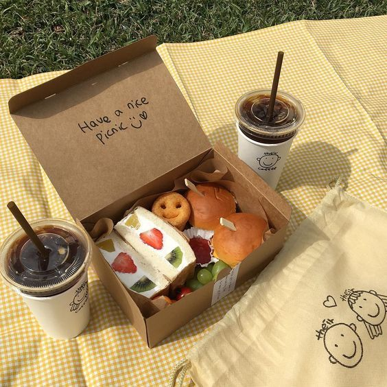
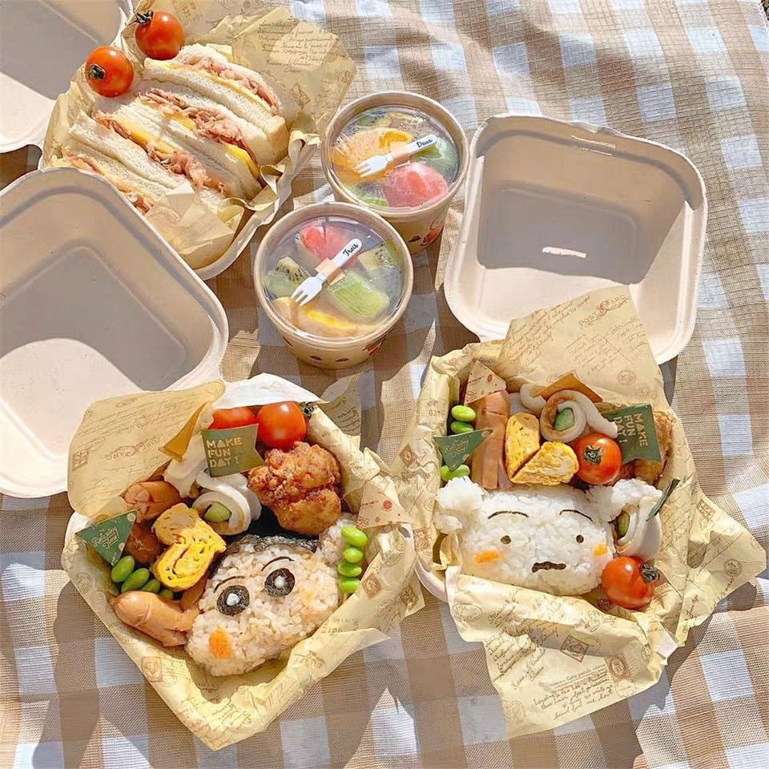
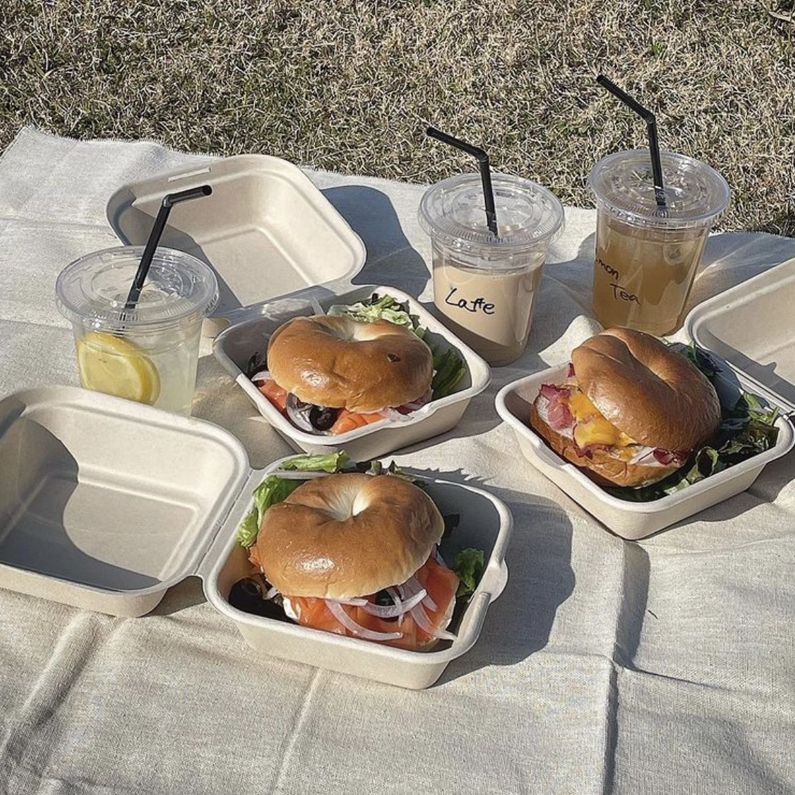
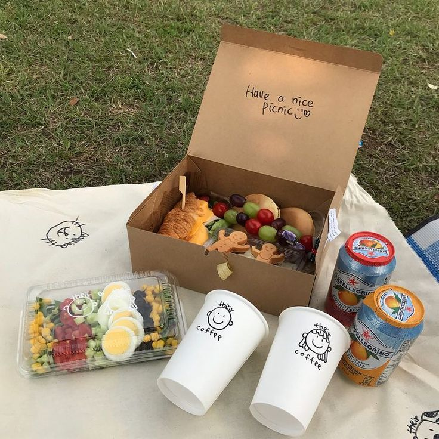
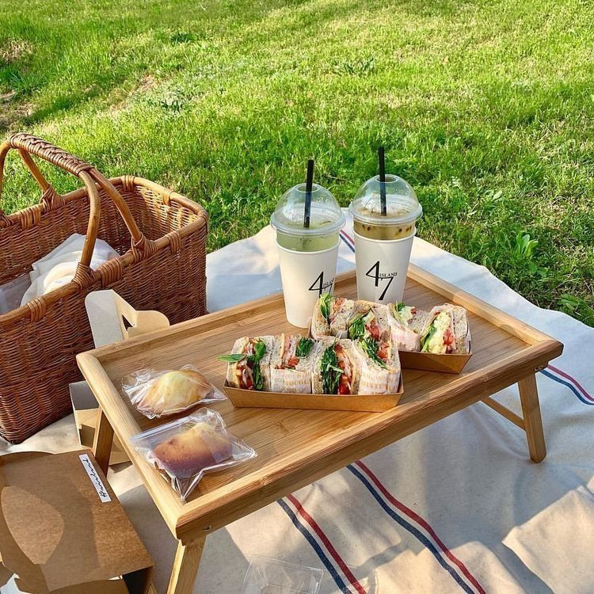

Spring & Summer
피크닉 도시락 레시피
설레는 계절, 마음을 담은 맛있는 기록

2023.03.01

2025.05.22

2025.03.12

2024.10.25

01
재료 손질하기
신선한 로메인과 토마토를 흐르는 물에 깨끗이 씻어 물기를 제거해주세요. 아삭한 식감이 샌드위치의 생명입니다.
02
소스 바르기
폭신한 식빵의 한쪽 면에 홀그레인 머스터드와 마요네즈를 섞어 얇게 펴 발라주세요. 빵이 눅눅해지는 것을 막아줘요.
03
재료 쌓기
준비한 채소와 햄, 치즈, 계란 프라이를 색감이 예쁘게 보이도록 차곡차곡 쌓아 올려줍니다. 색의 조화를 생각해보세요.
04
모양 잡기
재료가 흐트러지지 않게 랩이나 유산지로 단단하게 감싼 뒤, 10분 정도 두어 모양을 잡아주세요.
05
커팅하기
먹기 좋은 크기로 반듯하게 썰어주세요. 단면이 알록달록하게 나오면 피크닉 기분이 더 살아납니다!
06
담아내기
예쁜 도시락 통에 빈틈없이 담고, 제철 과일을 곁들이면 완벽한 봄날의 피크닉 도시락 완성입니다.